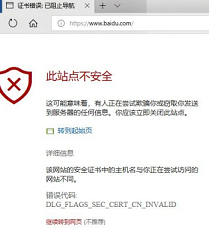
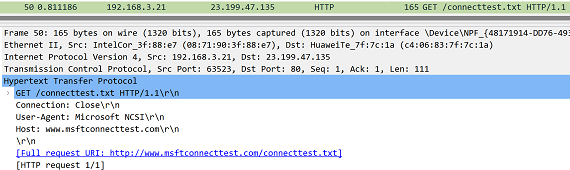
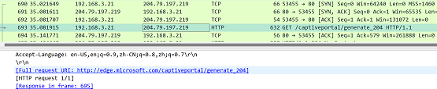
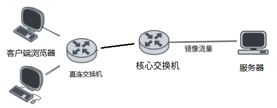

HTTPS下强制认证
January 10, 2022 -网络安全准入对终端设备最开始和直接的就是强制其认证合法性。
原有基于HTTP重定向认证已失效，因为HTTP不安全。且浏览器都强制HSTS技术只能HTTPS。
怎么在HTTPS下还能重定向来认证？
住宿酒店和搭乘飞机时会对我们有所启发。接入提供的免费WIFI后会重定向。
结论就是诱使OS发出HTTP。
技术背景
网络准入产品可以验证终端设备是否安全，使用强制网络门户认证技术实现此验证
- 强制网络门户认证(captive portal），终端入网后，强制弹出浏览器的认证页面，强制用户认证后使用网络
- HSTS(HTTP Strict Transport Security), 防止MiTM中间人攻击，浏览器强制使用HTTPS与服务器创建连接，用户无法发出HTTP请求
- Captive Portal实现依赖于阶段性的HTTP劫持，当设备入网后，通过DHCP服务获取本机IP地址和网关地址后，发出的HTTP请求被劫持后返回重定向到指定的HTTP认证页面
存在问题
- 用户终端入网后先用浏览器手动访问HTTPS网站时，返回给终端浏览器的重定向响应，由于浏览器验证服务器证书不匹配会警告，无法实施强制认证，使此技术方案失效。如图

- 用户终端网络在线时，由管控服务端实施准入策略，在未认证前断网，直到浏览器发出HTTP后被准入服务重定向后去认证。由于浏览器预制的HSTS域名缓存或服务端支持HSTS技术，HTTP被浏览器强制转换为HTTPS，致使浏览器验证服务器证书不匹配会警告，使此技术方案失效
- 原有准入系统实施基于浏览器http重定向的认证功能，在https下失效，报错证书不匹配，无法实施强制认证，使此技术方案失效。
可以利用OS的一个机制
操作系统：Windows/Linux/MacOS/Android/iOS下 刚入网时回探测是否需要认证，先探测有强制门户，再做认证
- 终端操作系统入网后探测是否处于认证网关之下，多次尝试连接指定的HTTP的url，最长超时 30 秒
- 如果指定服务返回了204状态码，即未发现强制门户，不需要验证
- 如果指定服务返回HTTP重定向认证，即强制门户认证，认证后网络放行

图1 OS发出探测

图2 OS收到无强制门户的204状态
以下是部分固定的探测强制门户的url
Windows :http://www.msftconnecttest.com/connecttest.txt
Google：http://www.gstatic.com/generate_204 / ， ...
Android:https://www.google.com/generate_204，...
小米： http://connect.rom.miui.com/generate_204
华为： http://connectivitycheck.platform.hicloud.com/generate_204
如何利用OS的这个机制
在交换机或浏览器上处理，诱发OS发出强制门户认证探测
两种方案各有优劣，也可同时使用
- 交换机方案依赖交换机的控制，普通服务没有控制交换机的权限
- 浏览器方案依赖用户先打开浏览器

图3 HTTPS重定向的网络拓扑
基于交换机的技术方案
- 准入服务控制交换机对终端断网后再开网
- 终端重新入网诱发其探测强制门户
- Windows尝试强制认证，访问http://www.msftconnecttest.com/connecttest.txt
- 终端桌面上托盘中的网络图标闪烁，提示用户点击图标，会打开浏览器并跳入认证页面
- 准入服务流量截获HTTP请求并重定向到认证页面
终端 交换机 强制门户 准入服务
|<---断网后再开网----| |
| | |
|-------------探测强制门户-------->|----捕获HTTP---->|
| | | |
|<------------发送模仿强制门户的重定向认证------------|
表1 基于交换机的HTTPS重定向
交换机实施控制技术
- 与终端直连的交换机将终端地址通过snmp trap上报准入服务
- 准入服务给指定终端断网再入网snmpset [up / down]
基于浏览器证书的技术方案
客户端浏览器 网络通讯 服务器(流量镜像)
- 浏览器发起请求，例如https://www.wechat.cn
- 准入服务识别HTTPS请求，生成自签名的ssl证书（可缓存证书重复利用），返回给终端浏览器
- 准入服务判断证书，包含公钥，颁发者 返回证书给终端浏览器
- 终端浏览器判定证书字段有误，终止后面数据传输的流程。进入门户认证流程，
- 发起http请求，寻找门户http://www.msftconnecttest.com/connecttest.txt
- 准入服务识别请求，修改门户地址，返回给终端浏览器
- 终端浏览器打开新tab页跳转到指定网址
终端 交换机 强制门户 准入服务
|-----------HTTPS浏览网页时SSL握手验证证书---------->|
|<----------------发送自签名的ssl证书----------------|
|---------判定证书字段有误，进入门户认证流程--------->|
| | |
|-------------探测强制门户-------->|----捕获HTTP---->|
| | | |
|<------------发送模仿强制门户的重定向认证------------|
表2 基于浏览器证书重定向
实现特点
- 解决了现有产品在HTTPS下强制门户认证的失效问题
- 高性能，同时大并发量下对HTTPS强制门户认证。基于BPF实现
- 绕过HSTS对HTTPS强制使用，实现HTTPS时也能实施强制门户认证
- 基于强制门户发出的HTTP探测，还能用于其他安全业务
代码目录结构1
bpf/ 驱动
lib/ 协议库
api.h 公用依赖头
eth.h 以太帧处理
ipv4.h ip帧处理
tcp.h tcp帧处理
http.h http处理
dhcp.h dhcp收集终端信息
os_filter.h 过滤os
metrics.h 系统性能
linux/ 内核类型
test/ 单元测试
bpf.c 驱动
Makefile 构建
main.go 加载入口
program.go 加载器
maps.go 内核与用户态传参字典
npf.go 驱动上报
npf_bpfel.go 自动生成加载驱动
snmp.go snmp下启停端口
tracer.go traceroute查找终端机器直连的交换机
驱动流程
从2层到5层，eth->ip4->tcp->http
- 网络入口 xdp_npf_prog(struct xdp_md* ctx)
- struct pkthdr pkt{data_cursor, data_begin, data_end}数据帧封装
- 过滤http及重定向
- config verify 读取配置，交换机ip等
- eth parse and verify, 只留IP包
- ipv4 parse and verify, host pkt pass
- tcp parse and verify
- tcp options filter, find and save token to hashmap
- os filter
- http parse and filter os
- lookup hashmap of token
- http parse and verify
- redirect http 本机debug时关闭
加载流程 program.go npf_bpfel.go
- cfg := LoadConfig("config") 加载本地配置
- npf := NewNpf(cfg) => npf.go 驱动加载
- loadNpfObjects(&bpf) => npf_bpfel.go 初始化
- LoadProg(bpf.npfPrograms.XdpNpfProg.FD()) => program.go 加载
- GetIface(linkname) 获取网卡interface
- AttachProg(）将启动挂载到网卡interface
- perf.NewReader(PKT_INFO_EVENTS_MAP） 挂载事件
- npf.SetKernelConfig() 构造配置下传
- redirectUrlLinux 重定向地址
- ipHost 本机地址
- macHost 交换机mac
- npf.Listen() 监听事件
- HandleRecord() 解析打印事件
https重定向流程 snmp.go tracer.go
- snmpscan() 主入口
- NewSnmp(p)
- Connect()
- QueryIfaces() 获取所有端口
- DownUpIface 关接口
- UpIface 开接口
- Trace() 主入口
- DefaultTracer 构建可配置的tracer
- Trace()
- ping
- Receive
- touch，记录每一跳
- Add，判断符合RTT或srcIP后添加
- Trace()
- hops，反向过滤所有跳，匹配上过滤
- DefaultTracer 构建可配置的tracer